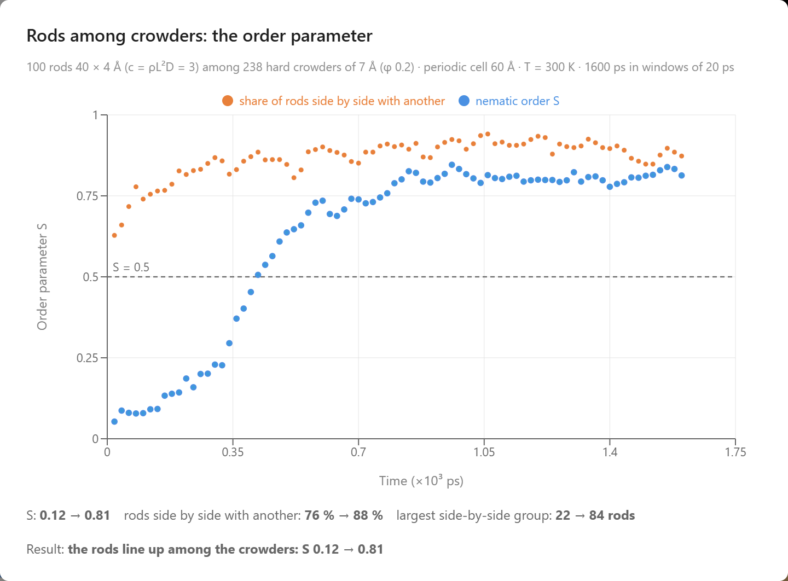
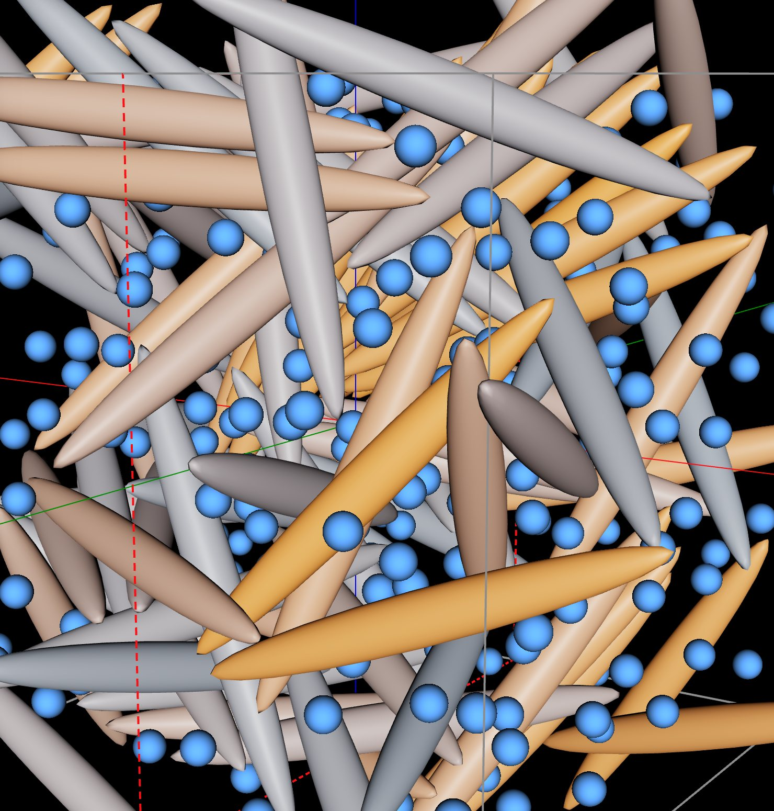
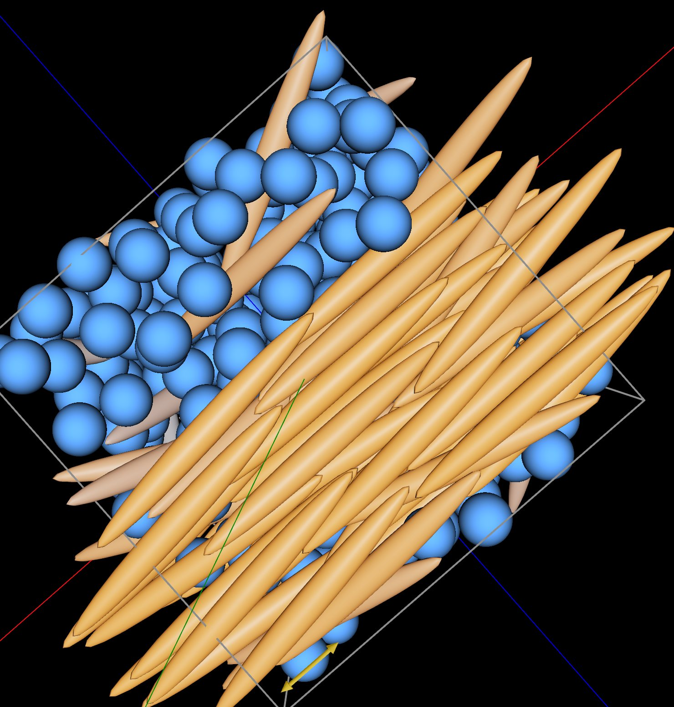
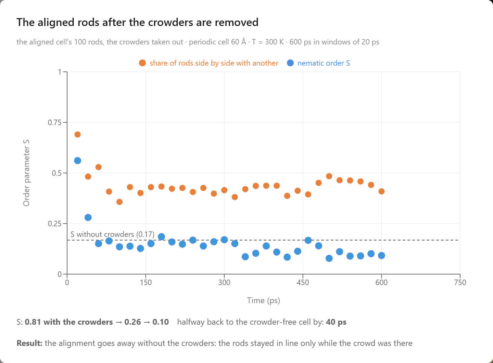

Order from Entropy: Filaments in a Crowd
In a crowd of small hard spheres, long rods line up and gather into a layer of their own.
Entropy is usually taught as the tendency of things to mix and spread out. A drop of ink spreads through a glass of water, and two gases in a box mix until each fills it. This article shows how the same drive toward higher entropy can put long rods in order under certain circumstances, which is counterintuitive. The explanation is in what gets counted: the rods give up freedom when they line up, but a crowd of small hard spheres around them gains more, so the entropy of the whole system still rises. Once the rods are lined up, they gather into a layer of their own, apart from the crowd. Both come from the depletion interaction. Asakura and Oosawa described it in 1954 for two large bodies in a solution of macromolecules, and Vrij described it independently in 1976. It is an entropic force, a force whose source is the number of arrangements available to a system. A stretched rubber band is a familiar example: stretching straightens its polymer chains and reduces the number of shapes they can take, and the band pulls back toward the state in which they have more.
The effect matters in biology because the inside of a cell is crowded. Proteins, RNA, and other macromolecules fill 20 to 30 % of its volume, as Ellis pointed out in 2001. In the laboratory, crowding polymers reproduce the effect on filaments. Hosek and Tang showed in 2004 that actin filaments gather into bundles in polyethylene glycol above a threshold concentration of the polymer, Dogic, Purdy, Grelet, Adams, and Fraden measured how the polymer dextran changes the transition of the rod-like fd virus from a disordered suspension to an aligned one, and Barry and Dogic found in 2010 that, with enough dextran, the same viruses assemble into sheets one rod thick. The theory for rods mixed with a polymer was worked out by Lekkerkerker and Stroobants in 1994, and Poon reviewed the phase behavior of colloid–polymer mixtures in 2002.
One hundred nearly hard rods among 238 small hard spheres, the crowders, in a periodic cell at 300 K. A rod keeps its color when it lies along the common direction and fades to gray when it lies across it.
Rods and Crowders
The rods are Gay–Berne ellipsoids, 40 Å long and 4 Å wide, the virus-like rods of the companion article Molecular Crowding with Gay–Berne Particles. The depth of their attraction for one another is set to 20 K in temperature units, meaning an energy of Boltzmann’s constant times 20 K, a fifteenth of the thermal energy at room temperature, so that a rod does little to a neighbor except keep it out of the room it occupies. The rods stand for filaments and the spheres for the macromolecules that crowd a cell, so the spheres are called crowders, and together they form the crowd. The crowders are 7 Å across. They repel one another with a Lennard-Jones potential of strength 300 K in the same units, cut off at its minimum and shifted to zero so that it only repels. They repel the rods with the Gay–Berne potential for an ellipsoid and a sphere, cut off and shifted the same way, whose reach and strength depend on the angle between the rod’s axis and the line to the sphere. In the lab they are drawn at their full size, so the cell looks as crowded as it is.
The cell is periodic and 60 Å across, and it holds 100 rods and 238 crowders at 300 K. The crowders fill a fifth of the volume, which is the low end of what macromolecules fill in a cell. The rods are at a concentration c = ρL²D = 3, the number of rods per volume times the length squared times the width. Onsager showed in 1949 that infinitely thin hard rods alone stay disordered below c = 4.19, and the second chat turn shows that these rods, without the crowders, point every way at c = 3. The order is measured by the nematic order parameter S, which is 1 when every rod points along the same direction and 0 when the rods point every way.
Try It
The example is in the Biology group of the Examples menu under the name Filaments That Align by Macromolecular Crowding. Open it, open the chat, and type the prompts below.
Be patient. Every picosecond is computed in your browser. The first prompt runs 338 particles for 1.6 nanoseconds, which takes about an hour on a typical computer; the other two take a few minutes each.
- The crowd — "Run the rods among the crowders at 300 K for 1600 ps and chart the nematic order parameter. Do the filaments line up among the crowd?"
- The control — "Does that depend on the crowders? Reset the lab to its opening frame, take the crowders out, and run the same rods for 600 ps."
- The crowd taken away — "Now load the aligned state from the first run, take the crowders out, and watch the rods for 600 ps. Does the alignment hold?"
The Rods Line Up Among the Crowd
The first chat turn ran the cell at 300 K for 1600 ps and averaged S over windows of 20 ps. S was 0.05 in the first window and stayed below 0.25 for the first 300 ps. Then the cell lined up: S passed 0.5 in the window that ended at 420 ps and leveled off near 0.81. The turn also counted the rods lying side by side with another rod, meaning that their axes are within 26° of each other, closer than one and a half rod widths, and overlapping along at least half their length. Averaged over the first and the last sixth of the run, that share rose from 76 % to 88 %, and the largest connected group of side-by-side rods grew from 22 rods to 84. The temperature stayed at 300 K throughout. The switch from disorder to order comes at a random moment, so another run of the same cell passes S = 0.5 sooner or later than this one.

The first chat turn: the order parameter S (blue) and the share of rods lying side by side with another rod (orange) against time for the rods among the crowders.
The Rods Separate from the Crowd
The chart shows that the rods line up. The frames saved along the run show what happens next. For six of them, measured after the run, the share of the cell more than 8 Å from any rod is a measure of how much of the cell the crowders have to themselves. That share was 1 % at the start, 5 % at 500 ps, 15 % at 820 and 1120 ps, 12 % at 1440 ps, and 17 % at 1600 ps. At 1600 ps the aligned rods form a layer: 81 of the 100 rods are in one half of the cell, and 172 of the 238 crowders are in the other half, with a few rods that point across the layer among the crowders. The rods lined up first and separated from the crowd over the next few hundred picoseconds. Suspensions of fd virus with dextran show the same kind of separation: a rod-rich aligned phase beside a polymer-rich disordered one. When the rod-rich region takes up about half of a periodic cell this small, a flat layer is the shape with the least boundary.


The cell at 20 ps (left), the rods pointing every way among the crowders, and at 1600 ps (right), seen from the same direction, the aligned rods on one side of the cell and the crowders on the other. Both are loaded by the buttons under the chart of the first chat turn.
Is the Crowd Responsible?
The second chat turn is the control: the same 100 rods from the same starting positions, without the crowders, for 600 ps. S stayed between 0.07 and 0.24 and averaged 0.17 over the last 100 ps, and the share of rods side by side stayed between 37 and 50 %, against 76 to 88 % among the crowders. The same rods at the same concentration and temperature stay disordered alone and line up among the crowd, so the order depends on the crowd.
Taking the Crowd Away
The third chat turn took the crowders out of the aligned cell at 1600 ps and ran the rods alone. S averaged 0.56 over the first 20 ps and 0.28 over the next 20, down from 0.81, and after 60 ps it stayed between 0.08 and 0.19, the level of the control. The share of rods side by side fell from 88 % to between 36 and 48 % after 80 ps. The rods stayed in line only while the crowd was there, and once it is gone their thermal motion turns them every way again.

The third chat turn: S and the share of rods side by side after the crowders are removed. The dashed line marks S for the same rods without crowders.
Counting the Entropy
Mixing two kinds of particles raises the entropy when the particles are points, or all the same size and shape, because mixing gives each particle the whole volume and costs nothing in packing. Rods and crowders differ greatly in size and shape, and each takes up a great deal of room. A crowder's center stays at least about 5.5 Å from the axis of a rod, the sum of their radii, so each rod is wrapped in a sleeve of about 3,800 ų that no crowder center can enter, more than ten times the 335 ų of the rod itself. If none of them overlapped, the sleeves of 100 rods would add up to 380,000 ų, more than the 213,000 ų of the whole cell. Where two rods lie parallel and close, their sleeves overlap, and the overlap is volume returned to the crowders. The entropy of the cell counts the positions and directions of the rods and the positions of the crowders. Lining the rods up and packing them in a layer costs the rods positions and directions, and it gives each of the 238 crowders more free volume to move in. When the crowders' gain is larger than the rods' loss, the ordered and separated cell has the higher total entropy. The only attraction in the cell is the rods’ 20 K attraction, a fifteenth of the thermal energy, so energy plays almost no part in the balance, and at a fixed temperature the cell moves toward the arrangement of highest entropy.
The rods line up before they separate because a dense packing needs parallel rods. A separate measurement, the push of the crowders on two rods held parallel among them, puts the gain for two rods this short at a few times the thermal energy kBT, too little to hold a pair together for long. Once the rods are parallel, each rod in a layer shares its sleeve with several neighbors, and the gains add up. A filament in a cell, microns long, shares a contact hundreds of times longer and gains correspondingly more. Because the depletion force is entropic, it is proportional to temperature for perfectly hard particles. A rubber band shows the same signature: it stiffens when it is warmed, and it warms when it is stretched quickly, the Gough–Joule effect, because the entropy its chains lose on stretching reappears as heat.
The order appears with no aligning field, wall, or restraint acting on the rods, and the integration of the equations of motion is sound: run without its thermostat for 40 ps, the cell keeps its total energy to within about 0.25 % of its kinetic energy at the 4 fs time step used here, and to within 0.01 % at 2 fs. The model is a small version of the experiments. The rods are 40 Å long, against about 900 nm for an fd virus, the runs last nanoseconds, and the layer shape comes partly from the periodic cell. The crowders repel one another, while the polymer coils in the Asakura–Oosawa model pass through one another freely. The crowders’ repulsion of the rods is also slightly soft: in the same measurement on two held rods, the push matches the hard-particle value when the rods touch and falls to zero at a closer spacing, which gives a pair of rods about half the attraction that perfectly hard particles would. The theory of Lekkerkerker and Stroobants predicts the same pattern for rods mixed with a polymer: the polymer widens the range of concentrations in which a disordered phase poor in rods coexists with an aligned phase rich in them.
What the Simulation Produced
The simulation was given rods that barely attract one another and hard spheres. Everything else below came out of it:
- Alignment among a crowd — 100 rods at c = 3 among 238 crowders filling a fifth of the cell line up at 300 K: S rises from 0.05 to 0.81 and passes 0.5 at 420 ps.
- Separation — the share of the cell more than 8 Å from any rod is 1 % at the start and reaches 15 % at 820 ps and 17 % at 1600 ps, as the aligned rods form a layer apart from the crowd.
- The control — the same rods without the crowders stay disordered for 600 ps, S between 0.07 and 0.24.
- The crowd removed — S falls from 0.81 to an average of 0.28 between 20 and 40 ps after the crowders are removed and stays at the level of the control.
Conclusion
This article uses the depletion interaction to illustrate a new way to learn science: students converse with an AI agent that turns a plain-language question into a molecular dynamics experiment and returns measured data. Rods that line up among a crowd of hard spheres, separate from it, and fall back into disorder when the spheres are removed become something students measure for themselves in a browser. By pairing a physically grounded coarse-grained simulation with an AI that can set it up and run it, AIMS turns a student's curiosity into a genuine scientific investigation of how entropy can paradoxically produce order.
← Back to AIMS